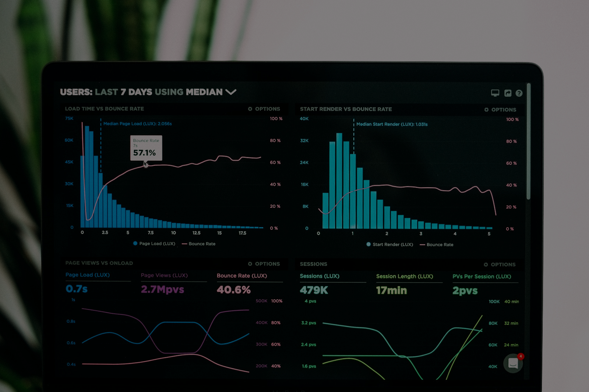
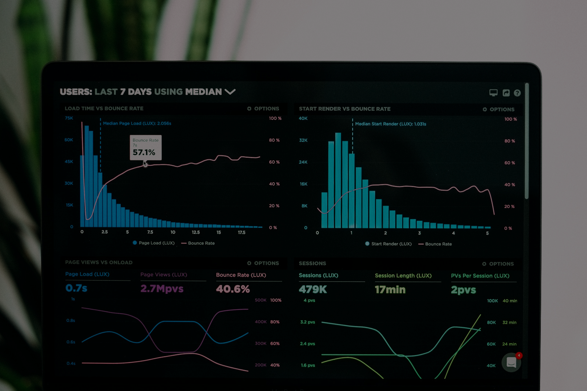

.png)
.png) 

we understand the importance of managing your finances effectively. Our Expense Tracker is designed to simplify your financial journey by providing a user-friendly platform to monitor and analyze your expenditures. Key Features: Effortless Tracking: Easily record and categorize your expenses, whether it's daily purchases, bills, or any other financial transactions. Insightful Reports: Gain valuable insights into your spending habits through detailed reports and visualizations. Identify trends, set budgets, and make informed financial decisions. User-Friendly Interface: Our intuitive interface ensures a seamless experience for users of all levels. No more hassle—just smart and efficient expense tracking. Why Choose Us: Security First: Your financial data is important, and we prioritize its security. Our Expense Tracker employs state-of-the-art security measures to safeguard your information. Accessibility: Access your expense data anytime, anywhere. Our platform is designed to be responsive, allowing you to stay in control of your finances on the go. Personalized Experience: Tailor your Expense Tracker to fit your unique financial goals. Customize categories, set reminders, and take charge of your financial well-being. Whether you're a seasoned financial expert or just starting on your budgeting journey, our Expense Tracker is here to support you. Start taking control of your finances today!
Expense